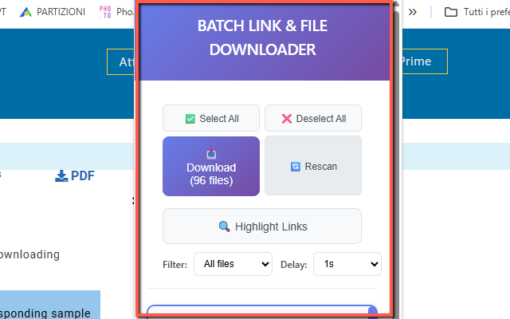
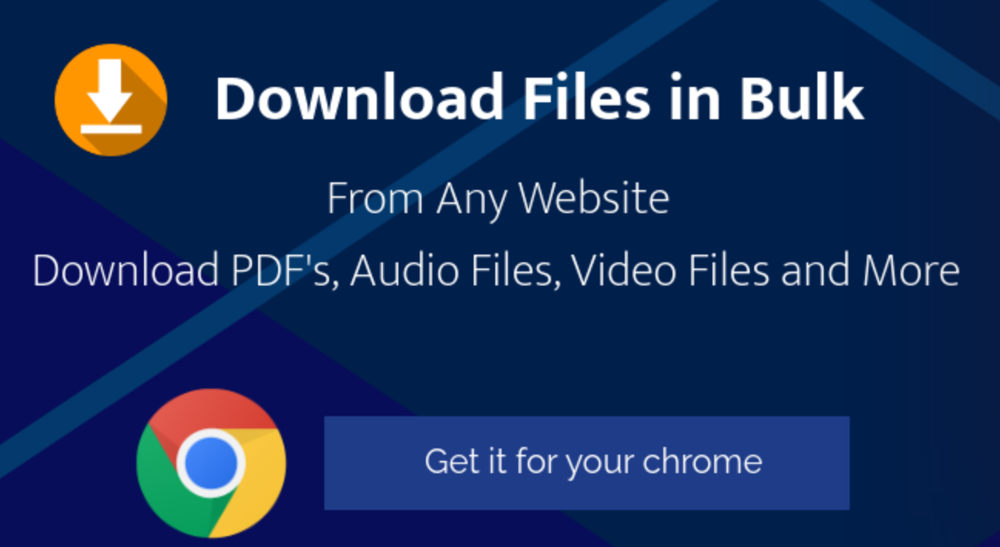

Batch File Downloader
Ever felt overwhelmed by having to download dozens or even hundreds of files one by one? Meet Batch File Downloader 🚀 – the ultimate Chrome extension designed to save your time and make bulk downloads effortless. With just a few clicks, you can grab all the files you need from any web page, organized and ready on your computer.
This extension is perfect for students, researchers, developers, or anyone who often deals with multiple file downloads. Instead of wasting time clicking through each individual link, Batch File Downloader automates the process, allowing you to filter, select, and download multiple files simultaneously. Whether you’re collecting documents 📄, images 🖼️, music 🎵, or code files 💻, this tool takes away the hassle of repetitive work.
Unlike traditional download managers, Batch File Downloader runs directly in your browser. No extra software installation, no complicated setups – just add the extension to Chrome and you’re ready to go. It integrates seamlessly with your workflow, offering a clean, intuitive interface. You can preview all downloadable items on a page, apply filters by file type (like PDF, JPG, ZIP), and choose exactly what to save. Efficiency and control in one package ✨.
Imagine browsing a gallery with hundreds of images. Instead of saving them manually, simply activate Batch File Downloader, select “.jpg” filter, and download them all in a single batch. Or think of working on a research project where dozens of PDF papers are scattered across a website – this extension will collect them in seconds. It’s built to reduce frustration, save time, and make the internet work for you.
📄 How to Use
- Install the extension from the Chrome Web Store.
- Visit any web page with downloadable files.
- Click the extension icon in your browser toolbar.
- Preview and filter files by type (PDF, images, archives, etc.).
- Select the files you want to download.
- Click "Download Selected" and let the extension handle the rest ✅.
📷 Screenshots


✅ Features
- Download multiple files from a page in one click
- Filter files by type (PDF, JPG, ZIP, MP3, etc.)
- Simple, intuitive interface 🖱️
- No extra software required – works directly in Chrome
- Fast, reliable, and secure
Batch File Downloader is not just a tool – it’s your productivity booster 💡. Whether you’re organizing work documents, saving media collections, or gathering resources for study, this extension transforms a time-consuming task into a simple one-step process. Stop wasting clicks, and start downloading smarter with Batch File Downloader today.
View on Chrome Web Store